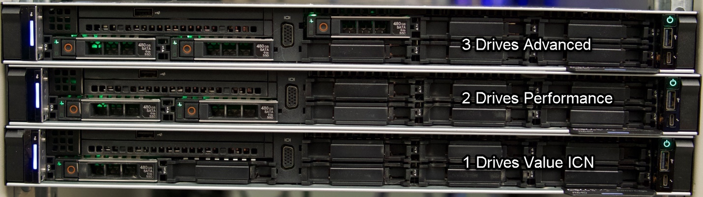
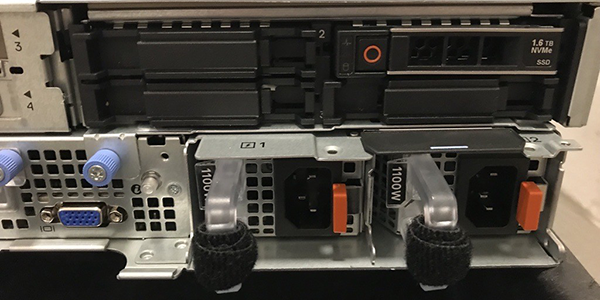
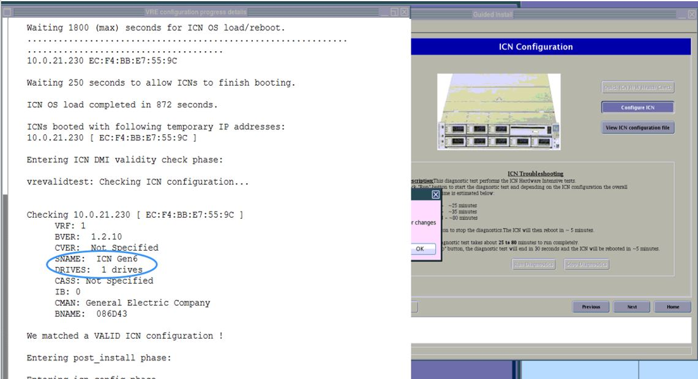

- 00000018WIA30C97640GYZ
- id_20145758.43
- Oct 29, 2025, 2:06:30 PM
Identifying the Image Compute Node (ICN) or Server Imaging Platform (SIP) type
Identify the Image Compute Node (ICN) or Server Imaging Platform (SIP) type you are replacing.
The following table lists the available ICNs/SIPs and the earliest version of application software that supports the ICN/SIP. As you progress through the table, the newer version of software identifies each ICN/SIP by generation, part number, vendor/product name, earliest software level supported, and the name the system reports through remote shell.
| ICN Type | ICN Part Number | Description | Supported Software | |
|---|---|---|---|---|
| Min SW | Max SW | |||
| Dell R640 (Gen 7) Value with Dolphin Card | 5941000-2 | Dell R640 (Gen 7) Value with Dolphin CardICN with Dolphin 2 Interface Card and GPU Card | CX40.1 or Software version 30.1 | N/A |
| Dell R640 (Gen 7-DL) Performance | 5941000-10 | Dell R640 (Gen 7-DL) Performance ICN with Dolphin 2 Interface Card and GPU Card | CX40.1 or Software version 30.1 | N/A |
| Server Imaging Platform (SIP) (ICN Gen 8) | 8790011-S01 | SIP-S01-G1 (ICN Gen8) | Software version 30.2 and later | N/A |
| 8790011-S03 | SIP-S03-G1 (ICN Gen8 DL) | |||
| 8790011-S13 | SIP-S13-G1 (ICN Gen8) | Software version 31.0 and later | ||

Keep this replacement information in mind. A SIP (ICN Gen 8) is significantly larger than an ICN Gen 5, 6, or 7. Replacing an older ICN with a SIP (ICN Gen 8) requires an upgrade that can take approximately five hours. If possible, use other ICN generations than SIP (ICN Gen 8).
ICN/SIP Badge Identification
A quick way to identify the generation of ICN/SIP in the system is to locate the manufacturer badge on the front of the unit.
Further details for identifying Gen 5, Gen 6, and Gen 7 ICNs can be determined through the ICN Configuration interface, or in /var/log/gehc/installer/VRE_Install.log. The SNAME and DRIVES fields indicate the specific ICN as shown in ICN/SIP Identification.



| SNAME Field | DRIVES Field | ICN/SIP Type |
|---|---|---|
| ICN Gen5 | Any | Gen5 |
| ICN Gen6 | 1 | Gen6 Value |
| ICN Gen6 | 2 | Gen6 Performance |
| ICN Gen6 | 3 | Gen6 Advanced |
| ICN Gen7 | 1 | Gen7 Value |
| ICN Gen7 | 2 | Gen7 Performance |
| ICN Gen7 | 3 | Gen7 Advanced |
| ICN Gen7-DL | 2 | Gen7-DL Performance |
| ICN Gen7-DL | 3 | Gen7-DL Advanced |
| Gen8-ICN-S01 | 1 | SIP (ICN Gen 8) |
| Gen8-ICN-S03 | 1 | SIP (ICN Gen 8 DL) |